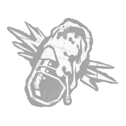

虹彩索特利亚芯片 Iridescent Soteria Chip
活动 · 所属：先驱者
效果
"一枚曾限制他力量的芯片，如今却成了更加强大力量的源泉。" 作用于破界，具有以下效果：激活时，赋予不可探测状态效果，且12米内逃生者的破界标记光环会向你揭示。此效果持续至你施展藤蔓攻击、进入颠倒世界，或破界结束时。

活动 · 所属：先驱者
"一枚曾限制他力量的芯片，如今却成了更加强大力量的源泉。" 作用于破界，具有以下效果：激活时，赋予不可探测状态效果，且12米内逃生者的破界标记光环会向你揭示。此效果持续至你施展藤蔓攻击、进入颠倒世界，或破界结束时。